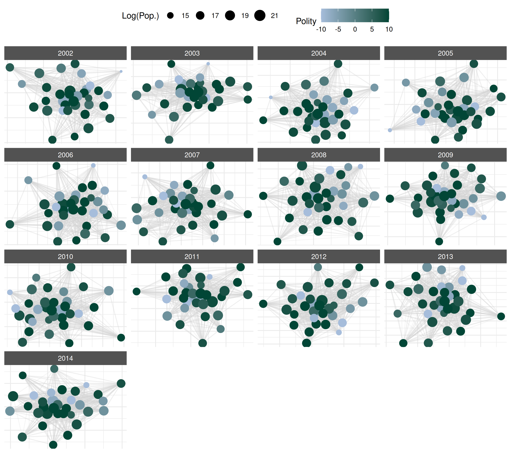

Manual Plotting with ggplot2
Cassy Dorff and Shahryar Minhas
2025-06-15
Source:vignettes/manual_plotting.Rmd
manual_plotting.RmdThis vignette provides an overview of how to create customizable
plots using ggplot2 while still using netify
to prepare the data.
Lets load the necessary libraries.
We’ll also use the ggnewscale package to create multiple
legends when necessary in the same plot (e.g., if you want to have
legends for a color aesthetic for both nodes and edges).
if(!'ggnewscale' %in% rownames(installed.packages())){
install.packages('ggnewscale', repos='https://cloud.r-project.org') }
library(ggnewscale)Preparing data
First lets create a netlet object from some dyadic data
(ICEWS data) using the netify package.
# load icews data
data(icews)
# choose attributes
nvars = c( 'i_polity2', 'i_log_gdp', 'i_log_pop' )
dvars = c( 'matlCoop', 'verbConf', 'matlConf' )
# create a netify object
netlet = netify(
icews,
actor1='i', actor2='j',
time = 'year',
symmetric=FALSE, weight='verbCoop',
mode='unipartite', sum_dyads=FALSE,
actor_time_uniform=TRUE, actor_pds=NULL,
diag_to_NA=TRUE, missing_to_zero=TRUE,
nodal_vars = nvars,
dyad_vars = dvars
)
# subset to a few actors
actors_to_keep = c(
'Australia', 'Brazil',
'Canada', 'Chile', 'China',
'Colombia', 'Egypt', 'Ethiopia',
'France', 'Germany', 'Ghana',
'Hungary', 'India', 'Indonesia',
'Iran, Islamic Republic Of',
'Israel', 'Italy', 'Japan', 'Kenya',
"Korea, Democratic People's Republic Of",
'Korea, Republic Of', 'Nigeria', 'Pakistan',
'Qatar', 'Russian Federation', 'Saudi Arabia',
'South Africa', 'Spain', 'Sudan',
'Syrian Arab Republic', 'Thailand',
'United Kingdom', 'United States',
'Zimbabwe' )
netlet = subset_netify(
netlet,
actors = actors_to_keep
)
# print
netlet## ✔ Hello, you have created network data, yay!
## • Unipartite
## • Asymmetric
## • Weights from `verbCoop`
## • Longitudinal: 13 Periods
## • # Unique Actors: 34
## Network Summary Statistics (averaged across time):
## dens miss mean recip trans
## verbCoop 0.861 0 179.484 0.978 0.928
## • Nodal Features: i_polity2, i_log_gdp, i_log_pop
## • Dyad Features: matlCoop, verbConf, matlConfThis is a longitudinal, weighted network with nodal and dyadic attributes. In a few more steps we will show how to highlight these attributes in the plot.
Next, we use the net_plot_data function to create a data
frame for ggplot2. net_plot_data extracts and
sets up node and edge data from a netify object according
to specified plotting arguments. It returns a list of different
components but the most important one for users is the
net_dfs element. This element contains two objects:
edge_data and nodal_data. These are data
frames that can be passed to ggplot2.
# create a data frame for plotting
plot_data = net_plot_data(netlet)
# get relevant dfs
net_dfs = plot_data$net_dfs
# check structure of what's here
str(net_dfs)## List of 2
## $ edge_data :'data.frame': 12937 obs. of 11 variables:
## ..$ from : chr [1:12937] "Brazil" "Canada" "Chile" "China" ...
## ..$ to : chr [1:12937] "Australia" "Australia" "Australia" "Australia" ...
## ..$ time : chr [1:12937] "2002" "2002" "2002" "2002" ...
## ..$ verbCoop: num [1:12937] 5 31 1 518 2 13 22 34 42 483 ...
## ..$ matlCoop: int [1:12937] 0 1 0 6 0 0 1 1 0 6 ...
## ..$ verbConf: int [1:12937] 0 1 1 12 0 1 2 1 0 114 ...
## ..$ matlConf: int [1:12937] 0 2 1 12 0 0 0 4 13 54 ...
## ..$ x1 : num [1:12937] -2.95 -2.9 -3.15 -3.09 -2.83 ...
## ..$ y1 : num [1:12937] 2.32 2.62 2.22 2.53 2.39 ...
## ..$ x2 : num [1:12937] -3.19 -3.19 -3.19 -3.19 -3.19 ...
## ..$ y2 : num [1:12937] 2.54 2.54 2.54 2.54 2.54 ...
## $ nodal_data:'data.frame': 442 obs. of 10 variables:
## ..$ name : chr [1:442] "Australia" "Australia" "Australia" "Australia" ...
## ..$ time : chr [1:442] "2002" "2003" "2004" "2005" ...
## ..$ i_polity2 : int [1:442] 10 10 10 10 10 10 10 10 10 10 ...
## ..$ i_log_gdp : num [1:442] 27.6 27.6 27.6 27.7 27.7 ...
## ..$ i_log_pop : num [1:442] 16.8 16.8 16.8 16.8 16.8 ...
## ..$ x : num [1:442] -3.187 -0.0567 -1.115 0.4053 4.7545 ...
## ..$ y : num [1:442] 2.535 0.445 -3.669 0.282 1.836 ...
## ..$ name_text : chr [1:442] "Australia" "Australia" "Australia" "Australia" ...
## ..$ name_label: chr [1:442] "Australia" "Australia" "Australia" "Australia" ...
## ..$ id : chr [1:442] "Australia_2002" "Australia_2003" "Australia_2004" "Australia_2005" ...
# check the first few rows of the edge data
head(net_dfs$edge_data)## from to time verbCoop matlCoop verbConf matlConf x1
## 1 Brazil Australia 2002 5 0 0 0 -2.951523
## 2 Canada Australia 2002 31 1 1 2 -2.895578
## 3 Chile Australia 2002 1 0 1 1 -3.150793
## 4 China Australia 2002 518 6 12 12 -3.088811
## 5 Colombia Australia 2002 2 0 0 0 -2.832835
## 6 Egypt Australia 2002 13 0 1 0 -2.962405
## y1 x2 y2
## 1 2.315115 -3.186958 2.535002
## 2 2.616097 -3.186958 2.535002
## 3 2.222567 -3.186958 2.535002
## 4 2.532826 -3.186958 2.535002
## 5 2.394330 -3.186958 2.535002
## 6 2.626167 -3.186958 2.535002
# check the first few rows of the nodal data
head(net_dfs$nodal_data)## name time i_polity2 i_log_gdp i_log_pop x y
## 79 Australia 2002 10 27.55492 16.78568 -3.18695808 2.5350018
## 80 Australia 2003 10 27.58556 16.79718 -0.05666548 0.4452790
## 81 Australia 2004 10 27.62686 16.80787 -1.11499738 -3.6691981
## 82 Australia 2005 10 27.65791 16.82005 0.40527329 0.2821195
## 83 Australia 2006 10 27.68495 16.83354 4.75445819 1.8357027
## 84 Australia 2007 10 27.72203 16.85179 -0.95933985 -0.8500965
## name_text name_label id
## 79 Australia Australia Australia_2002
## 80 Australia Australia Australia_2003
## 81 Australia Australia Australia_2004
## 82 Australia Australia Australia_2005
## 83 Australia Australia Australia_2006
## 84 Australia Australia Australia_2007The x and y in nodal_data and
the x1, y1, x2, and
y2 in edge_data are the coordinates of the
nodes and edges, respectively. These are the coordinates that will be
used to plot the network.
Creating a plot
Now that we have the data, we can create a plot using
ggplot2. We’ll use the geom_segment and
geom_point (or, geom_label,
geom_text, and the `ggrepel package equivalents) functions
to plot the edges and nodes, respectively.
ggplot() +
geom_segment(
data = net_dfs$edge_data,
aes(
x=x1,
y=y1,
xend=x2,
yend=y2
),
color='lightgrey',
alpha=.2
) +
geom_point(
data = net_dfs$nodal_data,
aes(
x=x,
y=y,
size=i_log_pop,
color=i_polity2
)
) +
labs(
color='Polity',
size='Log(Pop.)'
) +
scale_color_gradient(low='#a6bddb', high='#014636') +
facet_wrap(~time, scales='free') +
theme_netify()
Changing the layout
By default layouts for node positions are drawn from the
layout_nicely algorithm in the igraph package.
Users can specify other layouts as, for example, say that you wanted to
use the mds algorithm instead:
# create a df using mds instead
plot_data_mds = net_plot_data(netlet,
list(
layout='mds'
)
)
# see new x-y coordinates
lapply(plot_data_mds$net_dfs, head)## $edge_data
## from to time verbCoop matlCoop verbConf matlConf x1
## 1 Brazil Australia 2002 5 0 0 0 -0.72811128
## 2 Canada Australia 2002 31 1 1 2 -0.03316817
## 3 Chile Australia 2002 1 0 1 1 -0.65201941
## 4 China Australia 2002 518 6 12 12 -0.03316817
## 5 Colombia Australia 2002 2 0 0 0 -1.22997412
## 6 Egypt Australia 2002 13 0 1 0 0.36325222
## y1 x2 y2
## 1 0.36196590 -0.3548545 -0.1680305
## 2 -0.05312512 -0.3548545 -0.1680305
## 3 0.27166650 -0.3548545 -0.1680305
## 4 -0.05312512 -0.3548545 -0.1680305
## 5 -0.06398966 -0.3548545 -0.1680305
## 6 0.13977670 -0.3548545 -0.1680305
##
## $nodal_data
## name time i_polity2 i_log_gdp i_log_pop x y
## 79 Australia 2002 10 27.55492 16.78568 -0.35485450 -0.16803048
## 80 Australia 2003 10 27.58556 16.79718 0.20857397 -0.12705283
## 81 Australia 2004 10 27.62686 16.80787 -0.04224981 0.05123628
## 82 Australia 2005 10 27.65791 16.82005 -0.06014447 -0.02708750
## 83 Australia 2006 10 27.68495 16.83354 0.15073774 0.46114648
## 84 Australia 2007 10 27.72203 16.85179 -0.03161665 -0.03885021
## name_text name_label id
## 79 Australia Australia Australia_2002
## 80 Australia Australia Australia_2003
## 81 Australia Australia Australia_2004
## 82 Australia Australia Australia_2005
## 83 Australia Australia Australia_2006
## 84 Australia Australia Australia_2007Add Edge Information
So far, we have focused on using color to convey information about
nodal attributes in the network (population size and polity score). Now,
let’s add more edge information to the plot. For example, we can include
information about the matlConf dyadic attribute. Imagine we
want to highlight edges of verbal cooperation that occur at the same
time as when higher than average levels of material conflict occur in
the network. First, let’s create the variable in the edge data.
if(!'dplyr' %in% rownames(installed.packages())){
install.packages('dplyr', repos='https://cloud.r-project.org') }
library(dplyr)##
## Attaching package: 'dplyr'## The following objects are masked from 'package:stats':
##
## filter, lag## The following objects are masked from 'package:base':
##
## intersect, setdiff, setequal, union
# create high_matlConf variable
net_dfs$edge_data = net_dfs$edge_data |>
group_by(time) |>
mutate(
high_matlConf = matlConf > mean(matlConf, na.rm=TRUE)
) |>
ungroup() |>
as.data.frame()
# check
head(net_dfs$edge_data)## from to time verbCoop matlCoop verbConf matlConf x1
## 1 Brazil Australia 2002 5 0 0 0 -2.951523
## 2 Canada Australia 2002 31 1 1 2 -2.895578
## 3 Chile Australia 2002 1 0 1 1 -3.150793
## 4 China Australia 2002 518 6 12 12 -3.088811
## 5 Colombia Australia 2002 2 0 0 0 -2.832835
## 6 Egypt Australia 2002 13 0 1 0 -2.962405
## y1 x2 y2 high_matlConf
## 1 2.315115 -3.186958 2.535002 FALSE
## 2 2.616097 -3.186958 2.535002 FALSE
## 3 2.222567 -3.186958 2.535002 FALSE
## 4 2.532826 -3.186958 2.535002 TRUE
## 5 2.394330 -3.186958 2.535002 FALSE
## 6 2.626167 -3.186958 2.535002 FALSENow that we have the new variable in the data.frame, we can plot by
it but note that we now need a color aesthetic for both points and
segments, even though ggplot2 only supports one legend by
aesthetic by default. We can get around this by using the
new_scale_color function from the `ggnewscale
package.
# color line segments by this new variable
ggplot() +
geom_segment(
data = net_dfs$edge_data,
aes(
x=x1,
y=y1,
xend=x2,
yend=y2,
color=high_matlConf
),
alpha=.2
) +
scale_color_manual(
name='',
values=c('grey', 'red'),
labels=c('Below Avg. Matl. Conf', 'Above Avg.')
) +
new_scale_color() +
geom_point(
data = net_dfs$nodal_data,
aes(
x=x,
y=y,
size=i_log_pop,
color=i_polity2
)
) +
scale_color_gradient(
name='Polity',
low='#a6bddb', high='#014636') +
labs(
size='Log(Pop.)'
) +
facet_wrap(~time, scales='free') +
theme_netify() +
theme(
legend.position='right'
)
References
Boschee, Elizabeth; Lautenschlager, Jennifer; O’Brien, Sean; Shellman, Steve; Starz, James; Ward, Michael, 2015, ``ICEWS Coded Event Data’’, doi:10.7910/DVN/28075 , Harvard Dataverse.
Pedersen, T. L. (2020). ggnewscale: Multiple Fill and Colour Scales in ‘ggplot2’. R package version 0.4.3. https://CRAN.R-project.org/package=ggnewscale
Wickham, H. (2016). ggplot2: Elegant Graphics for Data Analysis. Springer-Verlag New York.